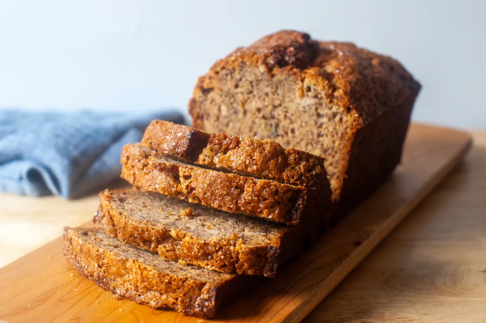

Banana Bread Recipe

Filling and Tasty Banana Bread
A quick and easy treat to make that won't last long in your household. Whether you're making it for yourself or
wrapping it in tinfoil and sending it to others around the holidays, this loaf is sure to put a smile on yours
and others face from the flavor alone. You could even add nuts or cinnamon into the mix if you so desire, it's
quite a flexible dish for all walks of tastebuds. Will make about 2 large 1 one small loaf.
Ingredients
- 2 cups sugar
- 1 cup shortening
- 6 bananas
- 4 eggs
- 2 1/2 cups flour
- 1tsp. salt
- 1tsp. baking soda
Steps
- Heat oven to 350F. Mash the 6 bananas into a mushy texture before setting them aside.
- Take a bowl and and add the sugar and shortening together before creaming them.
- Crack and mix the eggs well into the bowl before adding the mashed bananas as wel.l
- On the side, sift the flour with the salt and baking soda before adding it into the banana bowl and mixing
well together.
- Grease and flour loaf pan(s) before pouring dough in and placing in oven for about 45 minutes. Stick
a toothpick in the loaf until it comes out clean to know the bread is done. Let cool before enjoying your
treat.
Return to Homepage